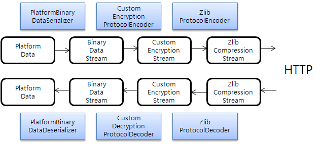

Package com.nexacro.xapi.tx
X-API의 데이터 통신을 수행한다.
See:
Description
Package com.nexacro.xapi.tx Description
X-API의 데이터 통신을 수행한다.
nexacro platform 또는 PlatformData를 이용하는 모든 클라이언트와 데이터 송수신을 수행한다.
데이터 통신의 대부분의 경우 HTTP 상에서 수행되며, XML 등의 형식으로 변환된 후 송수신된다. 주요 클래스는
HttpPlatformRequest,
HttpPlatformResponse 등이다.
1. 시작하기
다음은 X-API을 이용하여 데이터를 송수신하는 간단한 JSP 예제이다.
<%@ page import="com.nexacro.xapi.data.*" %>
<%@ page import="com.nexacro.xapi.tx.*" %>
<%@ page contentType="text/xml; charset=UTF-8" %>
<%
// 버퍼(buffer) 초기화
out.clearBuffer();
// HttpServletRequest를 이용하여 HttpPlatformRequest 생성
HttpPlatformRequest req = new HttpPlatformRequest(request);
// 데이터 수신
req.receiveData();
// 수신받은 데이터 획득
PlatformData reqData = req.getData();
VariableList reqVarList = reqData.getVariableList();
// 부서명 획득
String name = reqVarList.getString("name");
// 송신할 데이터 생성
PlatformData resData = new PlatformData();
VariableList resVarList = resData.getVariableList();
// 부서별 인원을 저장할 DataSet 생성
DataSet employees = new DataSet("employees");
// DataSet에 열(column) 추가
employees.addColumn(new ColumnHeader("name", DataTypes.STRING, 8));
employees.addColumn(new ColumnHeader("jobTitle", DataTypes.STRING));
employees.addColumn(new ColumnHeader("number", DataTypes.INT));
employees.addColumn(new ColumnHeader("manager", DataTypes.BOOLEAN));
// 부서별 인원 데이터 추가
if ("R&D Center".equals(name)) {
// 행(row) 추가
int row = employees.newRow();
// 추가된 행(row)의 데이터 설정
employees.set(row, "name", "John Jones");
employees.set(row, "jobTitle", "developer");
employees.set(row, "number", 1234);
employees.set(row, "manager", false);
// ...
// 정상 수행
resData.addDataSet(employees);
resVarList.add("ERROR_CODE", 200);
} else if ("Quality Assurance".equals(name)) {
// 행(row) 추가
int row = employees.newRow();
// 추가된 행(row)의 데이터 설정
employees.set(row, "name", "Tom Glover");
employees.set(row, "jobTitle", "manager");
employees.set(row, "number", 9876);
employees.set(row, "manager", true);
// ...
// 정상 수행
resData.addDataSet(employees);
resVarList.add("ERROR_CODE", 200);
} else {
// 오류 발생
resVarList.add("ERROR_CODE", 500);
}
// HttpServletResponse를 이용하여 HttpPlatformResponse 생성
HttpPlatformResponse res = new HttpPlatformResponse(response);
res.setData(resData);
// 데이터 송신
res.sendData();
%>
|
X-API를 이용한 JSP 예제
2. 데이터 송수신
nexacro platform과의 데이터 통신은 대부분의 경우 HTTP 상에서 수행되며, 특정 형식으로 변환된 후 송수신된다.
송수신 형식(contentType)은 데이터가 송수신되기 위해 객체에서 특정 형식의 데이터(stream)으로 변환되는 것을 의미하며,
프로토콜 형식(protocolType)은 데이터의 압축, 암호화 등을 수행하는 것을 의미한다.
송수신 형식(contentType)과 프로토콜 형식(protocolType) 등 데이터 변환에 대한 주요 인터페이스는 다음과 같다.
| 인터페이스명 |
설 명 |
DataSerializer |
PlatformData를 특정 형식의 데이터(stream)으로 변환 |
DataDeserializer |
특정 형식의 데이터(stream)를 PlatformData로 변환 |
ProtocolEncoder |
데이터(stream)의 압축, 암호화 등을 수행 |
ProtocolDecoder |
압축, 암호화 등이 적용된 데이터(stream)를 압축 해제, 복호화 등을 수행 |
3. 데이터 송수신의 내부 흐름
데이터 송신 흐름
- Server에서 데이터를
PlatformData에 저장한 후 송신함
DataSerializer에 의해 PlatformData가 특정 형식의 데이터(stream)로 변환됨ProtocolEncoder에 의해 압축, 암호화 등이 적용됨- HTTP 상으로 데이터(stream)가 송신됨
데이터 수신 흐름
- HTTP 상에서 압축, 암호화 등이 적용된 데이터(stream)를 수신받음
ProtocolDecoder에 의해 압축 해제, 복호화 등이 수행됨DataDeserializer에 의해 특정 형식의 데이터(stream)가 PlatformData로 변환됨- Client에서 데이터가 저장된
PlatformData를 수신받음
다음은 PlatformData를 Binary 송수신 형식으로 암호화와 압축을 수행하는 경우의 내부 흐름 예이다.

4. Server 상의 HTTP 데이터 통신
nexacro platform과 HTTP 상에서 데이터 통신을 하기 위해서는
HttpPlatformRequest와 HttpPlatformResponse를 이용하여 JSP 또는 Servlet을 작성한다.
HttpPlatformRequest와 HttpPlatformResponse는
javax.servlet.http.HttpServletRequest와 javax.servlet.http.HttpServletResponse를 이용하여 HTTP 통신을 수행하며,
HttpPlatformRequest는 nexacro platform으로 데이터(stream)를 수신받은 후 PlatformData으로 변환하고,
그와는 반대로 HttpPlatformResponse는 PlatformData를 데이터(stream)으로 변환한 후 nexacro platform으로 송신한다.
// HttpServletRequest를 이용하여 HttpPlatformRequest 생성
HttpPlatformRequest req = new HttpPlatformRequest(request);
// 데이터 수신
req.receiveData();
PlatformData data = req.getData();
|
HttpServletRequest으로부터 데이터 수신
PlatformData data = ...;
// HttpServletResponse를 이용하여 HttpPlatformResponse 생성
HttpPlatformResponse res = new HttpPlatformResponse(response);
res.setData(data);
// 데이터 송신
res.sendData();
|
HttpServletResponse으로 데이터 송신
<%@ page import="com.nexacro.xapi.tx.*" %>
<%@ page import="com.nexacro.xapi.data.*" %>
<%@ page contentType="text/xml; charset=UTF-8" %>
<%
out.clearBuffer();
HttpPlatformRequest req = new HttpPlatformRequest(request);
req.receiveData();
PlatformData data = req.getData();
HttpPlatformResponse res = new HttpPlatformResponse(response);
res.setData(data);
res.sendData();
%>
|
echo.jsp 예제
5. Client 상의 HTTP 데이터 통신
PlatformHttpClient은 X-API를 이용하여 작성된 JSP 등의 서비스와 통신을 수행하며, 통신하는 과정은 다음과 같다.
PlatformHttpClient 생성- 데이터 전송 :
sendData
- 데이터 수신 :
receiveData
- 종료 :
close
PlatformData reqData = ...;
// Client 생성
String url = "http://host/context/service.jsp";
PlatformHttpClient client = new PlatformHttpClient(url);
// 데이터 송신
client.sendData(reqData);
// 데이터 수신
PlatformData resData = client.receiveData();
// 종료
client.close();
|
PlatformHttpClient을 이용한 서버와의 통신
6. 데이터 송수신 형식
송수신 형식은 2. 데이터 송수신에서 언급되었듯이
데이터가 송수신되기 위해 객체에서 특정 형식의 데이터(stream)으로 변환되는 형식을 의미하며,
기 구현된 형식은 다음과 같다.
| 상수값 |
설 명 |
PlatformType.CONTENT_TYPE_XML |
Platform에서 정의된 XML 형식 |
PlatformType.CONTENT_TYPE_BINARY |
Platform에서 정의된 바이너리 형식 |
PlatformType.CONTENT_TYPE_SSV |
Platform에서 정의된 SSV 형식 |
<%@ page import="com.nexacro.xapi.data.*" %>
<%@ page import="com.nexacro.xapi.tx.*" %>
<%
// XML 형식으로 데이터 수신
HttpPlatformRequest req = new HttpPlatformRequest(request, PlatformType.CONTENT_TYPE_XML);
req.receiveData();
PlatformData data = req.getData();
// Binary 형식으로 데이터 송신
HttpPlatformResponse res = new HttpPlatformResponse(response, PlatformType.CONTENT_TYPE_BINARY);
res.setData(data);
res.sendData();
%>
|
XML 형식으로 데이터를 수신하고, Binary 형식으로 데이터를 송신하는 예제
만약에 사용자에 의해 정의된 송수신 형식이 아닌 기 제공되는 송수신 형식인 경우에는
다음과 같이 HttpPlatformRequest에 별도의 송수신 형식을 지정하지 않아도,
내부에서 자동으로 송수신 형식을 판단하여 처리한다.
<%@ page import="com.nexacro.xapi.data.*" %>
<%@ page import="com.nexacro.xapi.tx.*" %>
<%@ page contentType="text/xml; charset=UTF-8" %>
<%
out.clearBuffer();
// 송수신 형식을 자동으로 판단하여 데이터 수신
HttpPlatformRequest req = new HttpPlatformRequest(request);
req.receiveData();
PlatformData data = req.getData();
// HttpPlatformRequest에 의해 판단된 송수신 형식으로 데이터 송신
HttpPlatformResponse res = new HttpPlatformResponse(response, req);
res.setData(data);
res.sendData();
%>
|
송수신 형식을 자동으로 판단하는
HttpPlatformRequest
7. 데이터 프로토콜 형식
프로토콜 형식은 2. 데이터 송수신에서 언급되었듯이
데이터의 압축, 암호화 등을 수행하는 것을 의미하며, 기 구현된 형식은 다음과 같다.
| 상수값 |
설 명 |
PlatformType.PROTOCOL_TYPE_ZLIB |
ZLIB 방식으로 압축 |
<%@ page import="com.nexacro.xapi.data.*" %>
<%@ page import="com.nexacro.xapi.tx.*" %>
<%
// 데이터 수신
HttpPlatformRequest req = new HttpPlatformRequest(request);
req.receiveData();
PlatformData data = req.getData();
// ZLIB 방식으로 압축하여 데이터 송신
HttpPlatformResponse res = new HttpPlatformResponse(response, PlatformType.CONTENT_TYPE_BINARY);
res.addProtocolType(PlatformType.PROTOCOL_TYPE_ZLIB);
res.setData(data);
res.sendData();
%>
|
ZLIB 방식으로 압축하여 데이터 송신
8. 데이터 분할 송신
일반적으로 데이터는 DataSet에 저장하고,
HttpPlatformResponse를 이용하여 nexacro platform으로 데이터를 전달한다.
그러나, 데이터 건수가 많은 대용량 데이터의 경우 모든 데이터를 DataSet에
저장해야하므로, 메모리를 많이 사용하여 시스템에 부담을 줄 수 있다.
이런 문제를 대처하기 위해 데이터를 여러번 나누어 송신하는 기능을 제공한다.
데이터는 나누어 송신하지만, 다수의 연결(connection)이 생성되는것이 아니라,
하나의 연결(connection)로 모든 데이터를 송신함을 유의한다.
데이터 분할 송신은 다음의 순서로 진행되어야 한다.
- 객체 초기화 -
HttpPartPlatformResponse 생성
- 송신 시작 -
HttpPartPlatformResponse.start() 호출 (생략 가능)
Variable 송신 - HttpPartPlatformResponse.sendVariable(Variable) 호출Variable 송신 반복DataSet 송신 - HttpPartPlatformResponse.sendDataSet(DataSet) 호출DataSet 송신 반복- 송신 종료 -
HttpPartPlatformResponse.end() 호출 (반드시 호출 필요)
Variable 송신과 DataSet 송신은 각각 생략이 가능하며,
DataSet 송신 후에 Variable 송신하는 경우에는 예외가
발생한다.
// HttpPartPlatformResponse 생성
HttpPartPlatformResponse res = new HttpPartPlatformResponse(response);
// "company" Variable 송신
Variable companyVar = Variable.createVariable("company", "Amazon.com, Inc.");
res.sendVariable(companyVar);
// "url" Variable 송신
Variable urlVar = Variable.createVariable("url", "http://www.amazon.com/");
res.sendVariable(urlVar);
// "2011BestBooks" DataSet 생성
DataSet bestBooksDs = new DataSet("2011BestBooks");
bestBooksDs.addColumn("title", DataTypes.STRING, 64);
bestBooksDs.addColumn("author", DataTypes.STRING, 64);
bestBooksDs.addColumn("publisher", DataTypes.STRING, 64);
bestBooksDs.addColumn("price", DataTypes.INT, 16);
// "2011BestBooks" DataSet의 데이터 추가
String[][] bestBooks = {
{ "Lost in Shangri-La", "Mitchell Zuckoff", "Harper", "27" }
// ...
};
for (int i = 0; i < bestBooks.length; i++) {
int row = bestBooksDs.newRow();
bestBooksDs.set(row, "title", bestBooks[i][0]);
bestBooksDs.set(row, "author", bestBooks[i][1]);
bestBooksDs.set(row, "publisher", bestBooks[i][2]);
bestBooksDs.set(row, "price", Float.parseFloat(bestBooks[i][3]));
}
// "2011BestBooks" DataSet 송신
// 송신 후의 DataSet 데이터는 자동으로 삭제됨
res.sendDataSet(bestBooksDs);
// "fictionBooks" DataSet 생성
DataSet fictionBooksDs = new DataSet("fictionBooks");
fictionBooksDs.addColumn("title", DataTypes.STRING, 64);
fictionBooksDs.addColumn("author", DataTypes.STRING, 64);
fictionBooksDs.addColumn("publisher", DataTypes.STRING, 64);
fictionBooksDs.addColumn("price", DataTypes.INT, 16);
// "fictionBooks" DataSet의 "comic" 데이터 추가
String[][] comicBooks = {
{ "The Slackers Guide to U.S. History", "John Pfeiffer", "Adams Media", "13" }
// ...
};
for (int i = 0; i < comicBooks.length; i++) {
// ...
}
// "fictionBooks" DataSet의 "comic" 데이터 송신
res.sendDataSet(fictionBooksDs);
// "fictionBooks" DataSet의 "drama" 데이터 추가
String[][] dramaBooks = {
{ "Megan's Way", "Melissa Foster", "Outskirts Press, Inc.", "15" }
// ...
};
for (int i = 0; i < dramaBooks.length; i++) {
// ...
}
// "fictionBooks" DataSet의 "drama" 데이터 송신
res.sendDataSet(fictionBooksDs);
// "fictionBooks" DataSet의 "essays" 데이터 추가
String[][] essaysBooks = {
{ "Dracula", "Bram Stoker", "Bedrick. Blackie", "8" }
// ...
};
for (int i = 0; i < essaysBooks.length; i++) {
// ...
}
// "fictionBooks" DataSet의 "essays" 데이터 송신
res.sendDataSet(fictionBooksDs);
// HttpPartPlatformResponse 종료
res.end();
|
데이터 분할 송신
9. HTTP GET 방식의 데이터
때로는 데이터를 HTTP GET 방식으로 전달하고, 이를 수신받기를 원하는 경우도 있다.
대부분의 경우 간단한 데이터일 것이다.
이를 위해서 HttpPlatformRequest는 다음과 같은 2가지 속성을 지원한다.
| 속성명 |
데이터 형식 |
유효한 값 |
기본값 |
설 명 |
| http.getparameter.register |
String |
true 또는 false |
false |
데이터 수신시 HTTP GET 데이터의 등록 여부 |
| http.getparameter.asvariable |
String |
true 또는 false |
false |
HTTP GET 데이터 등록시 Variable 형식으로의 변환 여부,
false인 경우 HTTP GET 데이터는 DataSet 형식으로 변환
|
// HttpPlatformRequest 생성
HttpPlatformRequest req = new HttpPlatformRequest(request);
// HTTP GET 데이터의 등록 설정
req.setProperty("http.getparameter.register", "true");
// Variable 형식으로의 변환 설정
req.setProperty("http.getparameter.asvariable", "true");
// 데이터 수신
req.receiveData();
PlatformData data = req.getData();
// HttpPlatformResponse 생성
HttpPlatformResponse res = new HttpPlatformResponse(response);
res.setData(data);
// 데이터 송신
res.sendData();
|
HTTP GET 방식의 데이터 수신
10. 파일 업로드
파일 업로드는 Client에서 Server (X-API)로 파일을 전송하는 것을 의미한다.
X-API는 파일 송수신을 위한 API가 아니기 때문에, 가급적 타 제품 또는 타 패키지를 이용하여 파일을 송수신할 것을 권장한다.
특히, X-API에서 XML 형식으로 파일을 송수신하는 경우 메모리를 많이 사용하므로, 성능에 영향을 미칠 수 있음을 유의한다.
만약에 송신되는 또는 수신받은 데이터의 데이터 형식(dataType)을 변경하기 원하는 경우
DataTypeChanger를 이용하여 변경할 수 있다. 이 DataTypeChanger를
이용하여 수신받은 byte 배열 또는 String 데이터를 파일로 저장할 수 있다.
파일 업로드 과정
- Client에서 파일 데이터를 byte 배열 형식으로
DataSet에 저장
- Client에서 Server로 데이터 송신
- Server에서 byte 배열 형식으로 송신된 데이터의 데이터 형식(dataType)을
DataTypes.FILE 데이터 형식(dataType)으로 변환하는 DataTypeChanger 등록
- Server에서 Client으로부터 데이터 수신
- Server에서 데이터를 수신하는 과정에
DataTypes.FILE 데이터 형식(dataType)으로 변환되는 데이터는 자동으로 임시 파일로 저장
- Server에서 저장된 임시 파일 조작
<%@ page import="java.io.*" %>
<%@ page import="com.nexacro.xapi.tx.*" %>
<%@ page import="com.nexacro.xapi.data.*" %>
<%@ page contentType="text/xml; charset=UTF-8" %>
<%
// 버퍼(buffer) 초기화
out.clearBuffer();
// HttpPlatformRequest 생성
HttpPlatformRequest req = new HttpPlatformRequest(request);
// byte 배열 데이터를 파일로 저장하기 위한 DataTypeChanger 설정
req.setDataTypeChanger(new UploadDataTypeChanger());
// 데이터 수신
req.receiveData();
// 수신된 데이터 참조
PlatformData reqData = req.getData();
// 임시로 저장된 파일들을 업로드될 위치로 이동
copyFiles(reqData);
// 송신 데이터 생성
PlatformData resData = new PlatformData();
VariableList resVl = resData.getVariableList();
// 오류코드 설정
resVl.add("ERROR_CODE", "200");
// HttpPlatformResponse 생성
HttpPlatformResponse res = new HttpPlatformResponse(response, req);
// 송신 데이터 설정
res.setData(resData);
// 데이터 송신
res.sendData();
%>
<%!
// 임시로 저장된 파일들을 업로드될 위치로 이동
void copyFiles(PlatformData data) {
// 파일들이 업로드될 위치
String dir = "C:\\upload";
// 파일 데이터가 저장된 DataSet 참조
DataSet ds = data.getDataSet("resources");
// DataSet의 행(row)의 갯수 참조
int count = (ds == null) ? 0 : ds.getRowCount();
// DataSet의 행(row)의 갯수, 즉 업로드된 파일의 갯수만큼 순환
for (int i = 0; i < count; i++) {
// 파일명 참조
String name = ds.getString(i, "name");
// 파일크기 참조
int size = ds.getInt(i, "size");
// 파일의 변경시간 참조
long lastWriteTime = ds.getLong(i, "lastWriteTime");
// 임시로 저장된 파일의 경로 참조
String filename = ds.getString(i, "content");
// 임시로 저장된 File
File file = new File(filename);
// 업로드될 위치로 이동할 File
File dest = new File(dir, name);
// 파일 이동
file.renameTo(dest);
}
}
// 수신 받은 DataSet 열(column)의 데이터 형식(dataType)을 변경하는 DataTypeChanger
class UploadDataTypeChanger implements DataTypeChanger {
// byte 배열의 데이터가 저장된 DataSet 열(column)의 데이터 형식(dataType)을 DataTypes.FILE 데이터 형식(dataType)으로 변경
// 수신 받는 데이터의 데이터 형식(dataType)을 DataTypes.FILE 데이터 형식(dataType)으로 변경하는 경우
// 데이터는 자동으로 임시 파일로 저장되고, DataSet에는 저장된 임시 파일의 경로가 저장된다.
public int getDataType(String dsName, String columnName, int dataType) {
// "resources" DataSet의 "content" 열(column)인 경우 DataTypes.FILE 데이터 형식(dataType) 반환
if ("resources".equals(dsName) && "content".equals(columnName)) {
return DataTypes.FILE;
}
// 이외에는 원 데이터 형식(dataType) 반환
return dataType;
}
}
%>
|
파일 업로드 jsp 예제
11. 파일 다운로드
파일 다운로드는 Server (X-API)에서 Client로 파일을 전송하는 것을 의미한다.
X-API는 파일 송수신을 위한 API가 아니기 때문에, 가급적 타 제품 또는 타 패키지를 이용하여 파일을 송수신할 것을 권장한다.
특히, X-API에서 XML 형식으로 파일을 송수신하는 경우 메모리를 많이 사용하므로, 성능에 영향을 미칠 수 있음을 유의한다.
파일의 데이터를 Client으로 송신을 원하는 경우에는 다음의 2가지 경우가 가능하다.
-
DataSet의 열(column)을 DataTypes.BLOB 형식으로 추가하고,
파일의 데이터를 byte 배열 형식으로 읽고, DataSet에 설정한다.
-
DataSet의 열(column)을 DataTypes.FILE 형식으로 추가하고, 다운로드할 파일의 경로를 DataSet에 설정한다.
데이터 송신시 DataTypes.FILE 형식은 자동으로 DataTypes.BLOB 형식으로 변환되며, 파일 경로에 위치한 파일의 데이터를 송신한다.
다음은 DataTypes.FILE 데이터 형식(dataType)을 이용한 파일 다운로드 예제이다.
<%@ page import="java.io.*" %>
<%@ page import="com.nexacro.xapi.tx.*" %>
<%@ page import="com.nexacro.xapi.data.*" %>
<%@ page contentType="text/xml; charset=UTF-8" %>
<%
// 버퍼(buffer) 초기화
out.clearBuffer();
// HttpPlatformRequest 생성
HttpPlatformRequest req = new HttpPlatformRequest(request);
// 데이터 수신
req.receiveData();
// 수신 데이터 참조
PlatformData reqData = req.getData();
// 파일 데이터가 포함된 송신 데이터 생성
PlatformData resData = createData();
// HttpPlatformResponse 생성
HttpPlatformResponse res = new HttpPlatformResponse(response, req);
// 송신 데이터 설정
res.setData(resData);
// 데이터 송신
res.sendData();
%>
<%!
// 파일 데이터가 포함된 송신 데이터 생성
PlatformData createData() {
// PlatformData 생성
PlatformData data = new PlatformData();
// 파일 데이터를 저장할 DataSet 생성
DataSet ds = new DataSet("resources");
// 파일명의 열(column) 추가
ds.addColumn("name", DataTypes.STRING, 128);
// 파일크기의 열(column) 추가
ds.addColumn("size", DataTypes.INT);
// 파일 변경시간의 열(column) 추가
ds.addColumn("lastWriteTime", DataTypes.LONG);
// 파일 데이터의 열(column) 추가
// 데이터 형식(dataType)을 DataTypes.FILE 데이터 형식(dataType)으로 추가하는 경우
// 데이터 송신시 데이터 형식(dataType)은 자동으로 DataTypes.BLOB 데이터 형식(dataType)으로 변환되며,
// 데이터는 설정된 파일 경로의 파일 데이터를 전송한다.
ds.addColumn("content", DataTypes.FILE);
// DataSet의 행(row) 데이터 추가
addRow(ds, "C:\\download\\data_structure.gif");
addRow(ds, "C:\\download\\serialize_flow.gif");
// PlatformData의 DataSet 추가
data.addDataSet(ds);
// 생성된 PlatformData 반환
return data;
}
// DataSet의 행(row) 데이터 추가
void addRow(DataSet ds, String filename) {
// DataSet의 행(row) 추가
int row = ds.newRow();
// 다운로드될 File 생성
File file = new File(filename);
// 파일명 설정
ds.set(row, "name", file.getName());
// 파일크기 설정
ds.set(row, "size", file.length());
// 파일의 변경시간 설정
ds.set(row, "lastWriteTime", file.lastModified());
// 파일의 경로 설정
ds.set(row, "content", file.getPath());
}
%>
|
파일 다운로드 jsp 예제
12. Stream을 이용한 데이터 통신
때로는 Socket과 File 등과 같이 InputStream과
OutputStream을 이용하여 데이터를 통신할 필요성이 발생한다.
이런 경우 PlatformRequest와 PlatformResponse를 이용하여 데이터를 주고 받을 수 있다.
물론, 단 방향만 수행할 수도 있다.
InputStream in = ...;
// PlatformRequest 생성
PlatformRequest req = new PlatformRequest(in);
// 데이터 수신
req.receiveData();
PlatformData reqData = req.getData();
OutputStream out = ...;
// PlatformResponse 생성
PlatformData resData = ...;
PlatformResponse res = new PlatformResponse(out);
res.setData(resData);
// 데이터 송신
res.sendData();
|
PlatformRequest와
PlatformResponse를 이용한 데이터 통신
참고로, 다음과 같이 PlatformRequest와 PlatformResponse를 이용하여
PlatformHttpClient와 동일한 기능을 수행할 수도 있다.
// 연결 생성
String loc = "http://host/context/service.jsp";
URL url = new URL(loc);
HttpURLConnection conn = (HttpURLConnection) url.openConnection();
conn.setRequestProperty("Content-Type", "text/xml; charset=UTF-8");
conn.setRequestMethod("POST");
conn.setDoOutput(true);
conn.setDoInput(true);
// 데이터 송신
PlatformData sendingData = ...;
OutputStream out = conn.getOutputStream();
PlatformResponse res = new PlatformResponse(out, PlatformType.CONTENT_TYPE_XML, "UTF-8");
res.setData(sendingData);
res.sendData();
out.close();
// 데이터 수신
InputStream in = conn.getInputStream();
PlatformRequest req = new PlatformRequest(in);
req.receiveData();
PlatformData receivedData = req.getData();
in.close();
// 연결 종료
conn.disconnect();
|
PlatformRequest와
PlatformResponse를 이용한 서버와의 통신
13. 파일로부터의 데이터 적재와 저장
파일의 데이터를 읽거나 쓰기 위해서는 다음과 같은 방법이 있다.
PlatformRequest와 PlatformResponse를 이용하여 직접 읽거나 쓰는 방법PlatformFileClient을 이용하여 데이터를 읽거나 쓰는 방법
// 데이터가 저장된 파일
String sourceFilename = ...;
InputStream source = new FileInputStream(sourceFilename);
// 파일로부터 데이터 읽기
PlatformRequest req = new PlatformRequest(source, PlatformType.CONTENT_TYPE_XML);
req.receiveData();
source.close();
PlatformData data = req.getData();
// 데이터를 저장할 파일
String targetFilename = ...;
OutputStream target = new FileOutputStream(targetFilename);
// 데이타를 파일로 쓰기
PlatformResponse res = new PlatformResponse(target, PlatformType.CONTENT_TYPE_BINARY);
res.setData(data);
res.sendData();
target.close();
|
파일의 데이터 읽기와 쓰기
// 데이터가 저장된 파일
String sourceFilename = ...;
// 데이터를 저장할 파일
String targetFilename = ...;
// PlatformFileClient 생성
PlatformFileClient client = new PlatformFileClient(sourceFilename, targetFilename);
// 데이터가 저장된 형식
client.setSourceContentType(PlatformType.CONTENT_TYPE_XML);
// 데이터를 저장할 형식
client.setTargetContentType(PlatformType.CONTENT_TYPE_BINARY);
// 파일로부터 데이터 읽기
PlatformData data = client.receiveData();
// 데이타를 파일로 쓰기
client.sendData(data);
// 종료
client.close();
|
PlatformFileClient을 이용한 데이타 읽기와 쓰기
14. PlatformData를 XML 문자열로 변환
PlatformData를 XML 문자열로 변환하기 위해서는 PlatformResponse를 이용하여 가능하다.
즉, XML 문자열을 저장할 버퍼를 생성하여 PlatformResponse으로 전달하고,
PlatformResponse는 XML 방식으로 PlatformData를 출력하면 된다.
PlatformData data = ...;
// XML 문자열을 저장할 버퍼
Writer out = new CharArrayWriter();
// CONTENT_TYPE_XML 형식으로 PlatformResponse 생성
PlatformResponse res = new PlatformResponse(out, PlatformType.CONTENT_TYPE_XML);
res.setData(data);
// XML 문자열 저장
res.sendData();
out.close();
// 저장된 XML 문자열
String xml = out.toString();
|
PlatformData를 XML 문자열로 변환
15. 추가, 변경, 삭제된 데이터 송신
DataSet은 데이터가 추가, 변경, 삭제된 경우 변경된 상태와 변경 이전의 원본 데이터를 저장한다.
자세한 정보는 11. DataSet의 원본 데이터와 변경된 데이터를 참조한다.
PlatformResponse 또는 HttpPlatformResponse는 위와 같은 데이터를
저장 방식(saveType)에 따라 구분하여 전송한다.
| 상수값 |
설 명 |
DataSet.SAVE_TYPE_NONE |
미설정 |
DataSet.SAVE_TYPE_ALL |
현재의 데이터와 추가, 변경, 삭제된 모든 데이터 저장 또는 전송 |
DataSet.SAVE_TYPE_NORMAL |
현재의 데이터만 저장 또는 전송 |
DataSet.SAVE_TYPE_UPDATED |
추가, 변경된 데이터만 저장 또는 전송 |
DataSet.SAVE_TYPE_DELETED |
삭제된 데이터만 저장 또는 전송 |
DataSet.SAVE_TYPE_CHANGED |
추가, 변경, 삭제된 데이터만 저장 또는 전송 |
저장 방식(saveType)은 PlatformData와 DataSet이 가지고 있으며,
DataSet의 저장 방식이 우선으로 적용되고,
DataSet의 저장 방식이 DataSet.SAVE_TYPE_NONE인 경우
PlatformData의 저장 방식이 적용된다.
만약에 PlatformData의 저장 방식도
DataSet.SAVE_TYPE_NONE인 경우 기본값 DataSet.SAVE_TYPE_NORMAL이 적용된다.
16. StreamLog를 이용한 송수신 데이터(stream) 저장
PlatformRequest의 StreamLog는
클라이언트로부터 수신받은 데이터(stream)를 특정 위치에 저장하는 역할을 수행한다.
이것은 서버에서 데이터 수신중에 오류가 발생하거나, 수신받은 데이터가 의심스러운 경우
파일로 저장하여 정확한 확인을 위한 것이다.
주의할 점은 StreamLog가 활성화된 경우 메모리를 많이 차지할 수 있으므로,
반드시 필요한 경우에만 사용한다.
// HttpServletRequest를 이용하여 HttpPlatformRequest 생성
HttpPlatformRequest req = new HttpPlatformRequest(request);
// 수신받은 데이터(stream) 로그의 활성화
req.setStreamLogEnabled(true);
// 수신받은 데이터(stream) 로그의 저장 위치
req.setStreamLogDir("/home/log");
// 데이터 수신
// 예외가 발생한 경우 자동적으로 로그 저장 위치에 수신받은 데이터(stream)가 저장됨
req.receiveData();
// 예외가 발생하지 않더라도 필요한 경우 강제적으로 로그 저장
req.storeStreamLog();
PlatformData data = req.getData();
|
수신받은 데이터(stream) 저장
17. localhost 테스트
local PC 상에서 "localhost" 또는 "127.0.0.1"으로 시작하는 URL으로 요청하는 경우 라이센스 파일 없이 동작이 가능하다.
라이센스 파일 없이 동작하기 위해서는 다음과 같이 작성하여야 한다.
HttpServletRequest를 이용하여 HttpPlatformRequest를 생성한다.HttpServletResponse와 이전 과정에서 생성된 HttpPlatformRequest를 이용하여 HttpPlatformResponse를 생성한다.- local PC 상에서 "localhost" 또는 "127.0.0.1" 으로 시작되는 URL으로 요청한다.
<%@ page import="com.nexacro.xapi.tx.*" %>
<%@ page import="com.nexacro.xapi.data.*" %>
<%@ page contentType="text/xml; charset=UTF-8" %>
<%
out.clearBuffer();
// localhost 테스트 방법
// 1) HttpServletRequest를 이용하여 HttpPlatformRequest 생성
// 2) HttpServletResponse와 이전 과정에서 생성된 HttpPlatformRequest를 이용하여 HttpPlatformResponse 생성
// 3) "localhost" 또는 "127.0.0.1" 으로 시작되는 URL으로 요청
HttpPlatformRequest req = new HttpPlatformRequest(request);
req.receiveData();
PlatformData data = req.getData();
HttpPlatformResponse res = new HttpPlatformResponse(response, req);
res.setData(data);
res.sendData();
%>
|
18. X-API의 내부 로그 출력하기
X-API의 내부 로깅(logging)은 Apache의 Commons Logging을 이용하여 출력한다.
Apache Commons Logging에 대한 자세한 사항은 여기를 참조하기 바란다.
따라서, Apache Commons Logging의 방침에 따라 로깅 설정을 하여 로그를 출력하고,
출력된 로그를 분석하여 개발 또는 운영시에 참조한다.
다음은 Apache Log4j를 이용하여 X-API의 내부 로그를 파일로 출력하는 예제이다.
- 클래스 경로에 X-API와 같이 Apache Log4j의 jar(log4j-x.x.x.jar)를 복사한다.
- log4j.properties를 작성하고, 클래스 경로에 복사한다.
- WAS(Web Application Server)를 재구동시킨다.
- X-API를 이용하는 서비스를 호출한다.
- Apache Log4j에서 설정된 위치에 로그가 파일로 출력되었을 것이다.
log4j.logger.com.nexacro.xapi.data=DEBUG, file
log4j.logger.com.nexacro.xapi.tx=DEBUG, file
log4j.appender.file=org.apache.log4j.FileAppender
log4j.appender.file.File=xapi.log
log4j.appender.file.Append=false
log4j.appender.file.layout=org.apache.log4j.PatternLayout
log4j.appender.file.layout.ConversionPattern=%-4r [%t] %-5p %c %x - %m%n
|
log4j.properties 예제
Apache Tomcat 환경인 경우 다음과 같이 설정할 수 있다.
- Apache Commons Logging의 jar(commons-logging-x.x.x.jar)를 $CATALINA_HOME/common/lib으로 복사한다.
- Apache Log4j의 jar(log4j-x.x.x.jar)를 $CATALINA_HOME/common/lib으로 복사한다.
- log4j.properties를 작성하고, $CATALINA_HOME/common/classes으로 복사한다.
- Apache Tomcat을 재구동시킨다.
- X-API를 이용하는 서비스를 호출한다.
- Apache Log4j에서 설정된 위치에 로그가 파일로 출력되었을 것이다.
log4j.rootLogger=INFO, tomcat
log4j.logger.com.nexacro.xapi.tx=DEBUG, xapi
log4j.logger.com.nexacro.xapi.data=DEBUG, xapi
log4j.appender.stdout=org.apache.log4j.ConsoleAppender
log4j.appender.stdout.layout=org.apache.log4j.PatternLayout
log4j.appender.stdout.layout.ConversionPattern=%-4r [%t] %-5p %c %x - %m%n
log4j.appender.tomcat=org.apache.log4j.FileAppender
log4j.appender.tomcat.File=${catalina.home}/logs/tomcat.log
log4j.appender.tomcat.Append=false
log4j.appender.tomcat.layout=org.apache.log4j.PatternLayout
log4j.appender.tomcat.layout.ConversionPattern=%-4r [%t] %-5p %c %x - %m%n
log4j.appender.xapi=org.apache.log4j.FileAppender
log4j.appender.xapi.File=${catalina.home}/logs/xapi.log
log4j.appender.xapi.Append=false
log4j.appender.xapi.layout=org.apache.log4j.PatternLayout
log4j.appender.xapi.layout.ConversionPattern=%-4r [%t] %-5p %c %x - %m%n
|
Apache Tomcat의 log4j.properties 예제
19. 데이터에 포함된 null 문자(0x00) 오류
nexacro platform의 Runtime과 데이터 통신을 수행하는 경우 nexacro platform Runtime과 X-API의 null 문자(0x00) 처리 방식의 차이로 인해
오동작이 발생할 수도 있다. nexacro platform Runtime에서는 null 문자를 문자열의 종료로 인식하지만,
X-API에서는 null 문자를 포함할 수 있다. 따라서, X-API에서 null 문자가 포함된 데이터를
nexacro platform Runtime으로 송신한 경우 nexacro platform Runtime에서는 null 문자까지만 표현하고, 나머지 데이터는 무시될 것이다.
20. JSP에서 데이터 전송시의 java.lang.IllegalStateException 예외
JSP에서 HttpPlatformResponse를 이용하여 데이터 전송시
동작은 성공적으로 수행되지만, java.lang.IllegalStateException 예외가 발생하게 된다.
이것은 Web Application Server 별로 동작이 다르다.
이 예외가 발생하는 원인은 HttpPlatformResponse에서
javax.servlet.http.HttpServletResponse의 OutputStream을 이용하기 때문입니다.
즉, HttpPlatformResponse에서 이미 HttpServletResponse.getOutputStream() 메소드가 호출되었고,
JSP 자체에서도 이를 참조하기 때문에 Web Application Server에서 이 예외를 발생시키는 것으로 예상된다.
| Web Application Server |
예외 발생 여부 |
예외 메시지 (버전에 따라 다를 수 있음) |
| IBM WebSphere |
발생 |
java.lang.IllegalStateException: OutputStream already obtained |
| Oracle WebLogic |
무시 |
|
| Tmax JEUS |
무시 |
|
| Apache Tomcat |
발생 |
java.lang.IllegalStateException: getOutputStream() has already been called for this response |
XML 또는 CSV 형식으로 데이터를 전송하는 경우에는
javax.servlet.http.HttpServletResponse의 Writer를 이용하기 때문에
위와 같은 예외가 발생하지 않는다. 즉, Binary 형식으로 데이터를 전송하는 경우에만 예외가 발생한다.
이 예외에 대한 대처 방안은 다음과 같다.
- JSP 수행에는 지장이 없으므로 무시한다. 테스트 장비에서는 가능할 것이다.
- Binary 형식으로 전송하는 경우에만 예외가 발생하므로, XML 또는 CSV 형식으로만 전송한다.
- JSP 상단에서
out.clear()와 out = pageContext.pushBody()를 호출하여 예외 발생을 방지한다.
- 근본적인 원인은 JSP에서 Binary 형식으로 전송하기 때문이므로, JSP 대신에 Servlet으로 작성한다.
<%@ page import="com.nexacro.xapi.tx.*" %>
<%@ page import="com.nexacro.xapi.data.*" %>
<%
out.clear();
out = pageContext.pushBody();
// ...
HttpPlatformResponse res = new HttpPlatformResponse(response, PlatformType.CONTENT_TYPE_BINARY);
res.setData(data);
res.sendData();
%>
|
Copyright © 2000-2014 TOBESOFT CO., LTD.